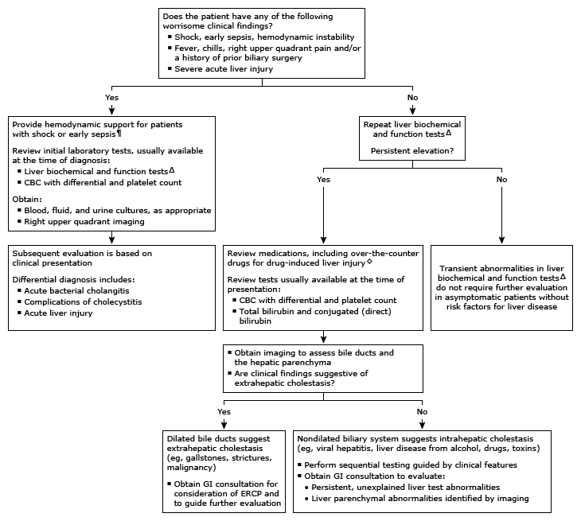

Initial evaluation of abnormal liver panel: High alkaline phosphatase and high conjugated bilirubin in adults*

This algorithm is intended for use with additional UpToDate content on abnormal liver biochemical and function tests.
CBC: complete blood count; GI: gastrointestinal; ERCP: endoscopic retrograde cholangiopancreatography; ALT: alanine aminotransferase; AST: aspartate aminotransferase; PT: prothrombin time.
* The normal reference range for serum alkaline phosphatase is 30 to 120 units/L. The normal range for total bilirubin is approximately 0.2 to 1.2 mg/dL (3.4 to 20.5 micromol/L) and for conjugated (direct) bilirubin approximately 0.1 to 0.4 mg/dL (1.7 to 6.8 micromol/L). Reference ranges may vary based on age, sex, race, and clinical circumstances. Interpretation of a specific abnormal test result should be based upon the reference range reported with that result.
¶ Life-saving interventions should not be delayed while awaiting the results of diagnostic testing.
Δ Liver biochemical tests include ALT, AST, alkaline phosphatase, and bilirubin. Liver function tests include PT and albumin.
◊ Refer to UpToDate graphic on types of drug-induced liver injury for a list of associated drugs.